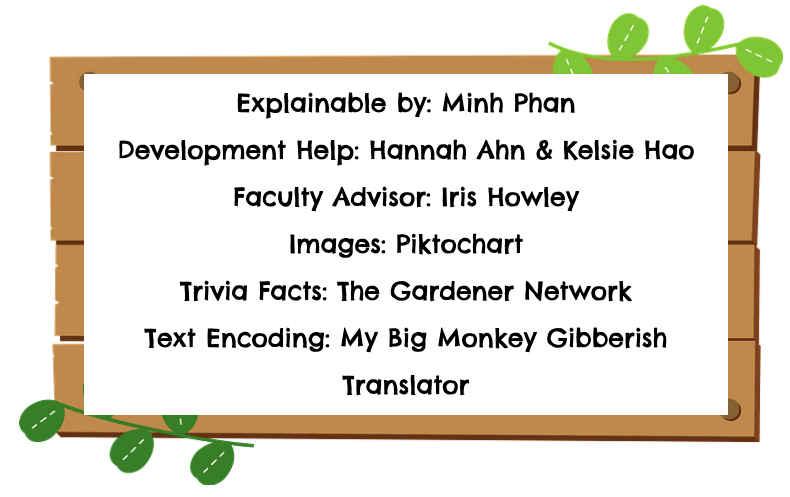

Bayesian Knowledge Tracing (BKT for short) is an artificial intelligence algorithm used to predict if students have learned a skill based on their state of knowledge.
Why Is It Useful?
BKT provides us with a means to advance users’ learning experiences to make them more engaging and are utilized through Open Learning Initiatives. It’s also a great tool for instructors to infer whether or not students are successful in their efforts and can improve their curriculum accordingly.
Now, let's learn some apple trivia and master apple picking with BKT!
Instructions:
Credits:

Please choose a difficulty setting:
Please select how likely the apple picked is rotten:
Please select how likely the question asked is encoded:
P(Know): 0.2
Questions Remaining:
BKT is calculated based on 4 probabilities: P(Know), P(Learn), P(Slip), and P(Guess).
P(Know): the likelihood of the user learning the targeted content; “mastery” of the content is usually considered achieved if this value reaches 0.95 or greater.
In the game, the user starts off with an arbitrary level of apple knowledge: P(Know) = 0.2
As they answer more and more questions, P(Know) increases or decreases in accordance to whether the answer was correct or incorrect as well as the preset parameters for P(Learn), P(Slip), and P(Guess).
Huh? When were those other 3 parameters preset?
P(Learn): the likelihood that the user will learn the skill in the next practice opportunity; this is sometimes referred to how “easily” the skill is to master, and a lower P(Learn) value will suggest a skill that is more difficult to learn than one that has a higher P(Learn) value.
P(Learn) was preset when the user selected a difficulty setting: regular or hard.
By choosing the difficulty, they also set up how "easy" or "hard" the concept will be to learn. In the game, selecting Regular would equate to a P(Learn) of 0.6 while selecting Hard equated to a P(Learn) of 0.4, corresponding with the concept that a higher P(Learn) value suggests that a concept is easier to learn than one with a lower P(Learn) value.
P(Slip): the likelihood that the user will answer incorrectly despite already knowing the skill; a low P(Slip) value suggests that if the user already knows the skill, they will almost certainly answer correctly.
P(Slip) was preset when selecting how likely an apple the user succeeded in picking turns out to be rotten. This represents the idea that even though the student has "learned" the concept, they still make a mistake and answer incorrectly. In the game, they might select the correct answer choice, but if the apple turns out to be rotten, it will be counted as incorrect.
P(Guess): the likelihood that the user will answer correctly despite not knowing the skill; a P(Guess) value that is too high might suggest some degeneracy in the model where the P(Know) value implies that the user has mastered the skill but in reality, they are just good at guessing.
P(Guess) was preset when selecting how likely questions asked will be encoded. By encoding the questions and answer choices, the user is forced to guess. This is to illustrate the concept of not knowing the content and guessing on the answer. Unlike the actual BKT parameter, where the correct answer is chosen even without knowledge of content, users can still answer incorrectly in the gameplay.
First, we calculate the conditional probability that the apple trivia was learned previously (at time n-1), based on whether the current question (at time n) was answered correctly or incorrectly:
Then, we use that result to compute the conditional probability that the student has learned the skill now (at time n):